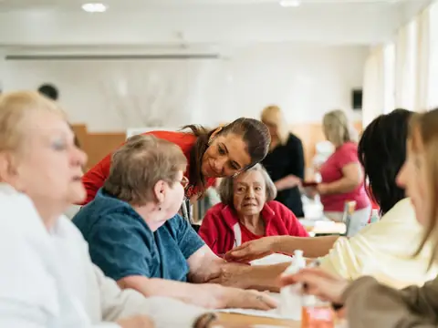

CareCertificate IIICHC33021
Certificate III in Individual Support
The starting qualification for hands-on support work in aged care, disability and home care.
- RPL
- Study online
14 qualifications and 2 first aid units. Search, filter, then compare up to three side by side.

CareCertificate IIICHC33021
The starting qualification for hands-on support work in aged care, disability and home care.
Certificate IVCHC43121
For experienced disability workers ready to take on more responsibility and lead day-to-day support.
 Care
Care
Certificate IVCHC43015
For aged care workers stepping up to senior carer, team leader or care coordination roles.
 Care
Care
DiplomaCHC52025
A broad leadership qualification for case management and program roles across the community sector.
Advanced DiplomaCHC62015
For managers who lead services, teams and budgets in not-for-profit and community organisations.
DiplomaCHC51015
Practical counselling skills for supporting people through personal, family and life challenges.
 Education
Education
Certificate IIICHC30125
The entry qualification for working as an educator in childcare, kindergarten and family day care.
 Education
Education
Certificate IVCHC40225
For education support staff helping students learn in primary and secondary classrooms.
DiplomaCHC50125
The qualification for room leaders, educational leaders and centre management in early learning.
DiplomaCHC50225
For coordinators and leaders in outside school hours care (OSHC) and vacation care programs.
 Training
Training
Certificate IVTAE40122
The qualification you need to train and assess others in the vocational education sector.
 Leadership
Leadership
Certificate IVBSB41419
For people who coordinate safety at work – from identifying hazards to running consultation and incident responses.
 Leadership
Leadership
DiplomaBSB50420
Practical management skills for leading people, projects and performance in any industry.
 Building
Building
DiplomaCPC50220
For experienced builders and site supervisors moving into building and project management.
 First aid
First aid
Single unitHLTAID009
A short course in CPR and using a defibrillator. Usually refreshed every 12 months.
 First aid
First aid
Single unitHLTAID011
The standard workplace first aid certificate, including CPR. Usually renewed every three years.
Typical prices are full-fee ranges published by Australian training providers (October 2026). They are not Poonam’s prices, and government funding can lower the cost in some states. Ask Poonam for an exact quote.
Try a different word, or one of these:
Looking for something we don’t list? Ask Poonam – she may still be able to help.
Answer four quick questions and see suggested courses, with reasons, before sharing any details.
0 of 3 selected · choose one more to compare
Poonam can talk you through the differences in job options, study time and entry requirements. To confirm: Confirm the first conversation is free and without obligation